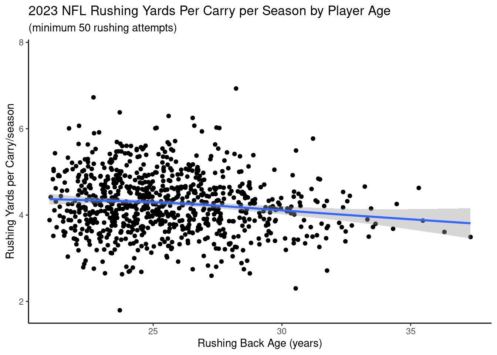
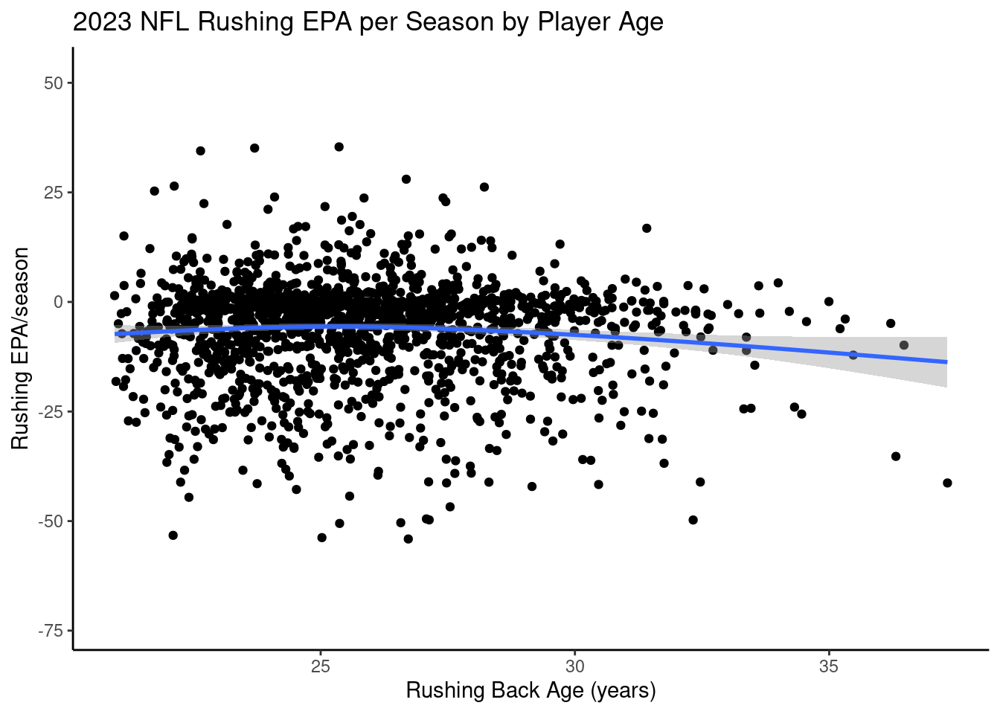

I want your feedback to make the book better for you and other readers. If you find typos, errors, or places where the text may be improved, please let me know. The best ways to provide feedback are by GitHub or hypothes.is annotations.
Opening an issue or submitting a pull request on GitHub: https://github.com/isaactpetersen/Fantasy-Football-Analytics-Textbook
Adding an annotation using hypothes.is.
To add an annotation, select some text and then click the
symbol on the pop-up menu.
To see the annotations of others, click the
symbol in the upper right-hand corner of the page.
3 Getting Started with R for Data Analysis
The book uses R for statistical analyses (http://www.r-project.org). R is a free software environment; you can download it at no charge here: https://cran.r-project.org.
3.1 Initial Setup
To get started, follow the following steps:
- Install
R: https://cran.r-project.org - Install
RStudio Desktop: https://posit.co/download/rstudio-desktop - After installing
RStudio, openRStudioand run the following code in the console to install several keyRpackages:
If you are in Dr. Petersen’s class, also perform the following steps:
- Set up a free account on GitHub.com.
- Download GitHub Desktop: https://desktop.github.com
3.2 Installing Packages
You can install R packages using the following syntax:
For instance, you can use the following code to install the nflreadr package:
3.3 Load Packages
3.4 Download Football Data
3.4.1 Players
3.4.2 Teams
3.4.3 Player Info
3.4.4 Rosters
A Data Dictionary for rosters is located at the following link: https://nflreadr.nflverse.com/articles/dictionary_rosters.html
3.4.5 Game Schedules
A Data Dictionary for game schedules data is located at the following link: https://nflreadr.nflverse.com/articles/dictionary_schedules.html
3.4.6 The Combine
A Data Dictionary for data from the combine is located at the following link: https://nflreadr.nflverse.com/articles/dictionary_combine.html
3.4.7 Draft Picks
A Data Dictionary for draft picks data is located at the following link: https://nflreadr.nflverse.com/articles/dictionary_draft_picks.html
3.4.8 Depth Charts
A Data Dictionary for data from weekly depth charts is located at the following link: https://nflreadr.nflverse.com/articles/dictionary_depth_charts.html
3.4.9 Play-By-Play Data
To download play-by-play data from prior weeks and seasons, we can use the load_pbp() function of the nflreadr package. We add a progress bar using the with_progress() function from the progressr package because it takes a while to run. A Data Dictionary for the play-by-play data is located at the following link: https://nflreadr.nflverse.com/articles/dictionary_pbp.html
Note: the following code takes a while to run.
3.4.10 4th Down Data
3.4.11 Participation
A Data Dictionary for the participation data is located at the following link: https://nflreadr.nflverse.com/articles/dictionary_participation.html
3.4.12 Historical Weekly Actual Player Statistics
We can download historical week-by-week actual player statistics using the load_player_stats() function from the nflreadr package. A Data Dictionary for statistics for offensive players is located at the following link: https://nflreadr.nflverse.com/articles/dictionary_player_stats.html. A Data Dictionary for statistics for defensive players is located at the following link: https://nflreadr.nflverse.com/articles/dictionary_player_stats_def.html.
Code
nfl_actualStats_offense_weekly <- progressr::with_progress(
nflreadr::load_player_stats(
seasons = TRUE,
stat_type = "offense"))
nfl_actualStats_defense_weekly <- progressr::with_progress(
nflreadr::load_player_stats(
seasons = TRUE,
stat_type = "defense"))
nfl_actualStats_kicking_weekly <- progressr::with_progress(
nflreadr::load_player_stats(
seasons = TRUE,
stat_type = "kicking"))3.4.13 Injuries
A Data Dictionary for injury data is located at the following link: https://nflreadr.nflverse.com/articles/dictionary_injuries.html
3.4.14 Snap Counts
A Data Dictionary for snap counts data is located at the following link: https://nflreadr.nflverse.com/articles/dictionary_snap_counts.html
3.4.15 ESPN QBR
A Data Dictionary for ESPN QBR data is located at the following link: https://nflreadr.nflverse.com/articles/dictionary_espn_qbr.html
Code
nfl_espnQBR_seasonal <- progressr::with_progress(
nflreadr::load_espn_qbr(
seasons = TRUE,
summary_type = c("season")))
nfl_espnQBR_weekly <- progressr::with_progress(
nflreadr::load_espn_qbr(
seasons = TRUE,
summary_type = c("weekly")))
nfl_espnQBR_weekly$game_week <- as.character(nfl_espnQBR_weekly$game_week)
nfl_espnQBR <- bind_rows(
nfl_espnQBR_seasonal,
nfl_espnQBR_weekly
)3.4.16 NFL Next Gen Stats
A Data Dictionary for NFL Next Gen Stats data is located at the following link: https://nflreadr.nflverse.com/articles/dictionary_nextgen_stats.html
Code
nfl_nextGenStats_pass_weekly <- progressr::with_progress(
nflreadr::load_nextgen_stats(
seasons = TRUE,
stat_type = c("passing")))
nfl_nextGenStats_rush_weekly <- progressr::with_progress(
nflreadr::load_nextgen_stats(
seasons = TRUE,
stat_type = c("rushing")))
nfl_nextGenStats_rec_weekly <- progressr::with_progress(
nflreadr::load_nextgen_stats(
seasons = TRUE,
stat_type = c("receiving")))
nfl_nextGenStats_weekly <- bind_rows(
nfl_nextGenStats_pass_weekly,
nfl_nextGenStats_rush_weekly,
nfl_nextGenStats_rec_weekly
)3.4.17 Advanced Stats from PFR
A Data Dictionary for PFR passing data is located at the following link: https://nflreadr.nflverse.com/articles/dictionary_pfr_passing.html
Code
nfl_advancedStatsPFR_pass_seasonal <- progressr::with_progress(
nflreadr::load_pfr_advstats(
seasons = TRUE,
stat_type = c("pass"),
summary_level = c("season")))
nfl_advancedStatsPFR_pass_weekly <- progressr::with_progress(
nflreadr::load_pfr_advstats(
seasons = TRUE,
stat_type = c("pass"),
summary_level = c("week")))
nfl_advancedStatsPFR_rush_seasonal <- progressr::with_progress(
nflreadr::load_pfr_advstats(
seasons = TRUE,
stat_type = c("rush"),
summary_level = c("season")))
nfl_advancedStatsPFR_rush_weekly <- progressr::with_progress(
nflreadr::load_pfr_advstats(
seasons = TRUE,
stat_type = c("rush"),
summary_level = c("week")))
nfl_advancedStatsPFR_rec_seasonal <- progressr::with_progress(
nflreadr::load_pfr_advstats(
seasons = TRUE,
stat_type = c("rec"),
summary_level = c("season")))
nfl_advancedStatsPFR_rec_weekly <- progressr::with_progress(
nflreadr::load_pfr_advstats(
seasons = TRUE,
stat_type = c("rec"),
summary_level = c("week")))
nfl_advancedStatsPFR_def_seasonal <- progressr::with_progress(
nflreadr::load_pfr_advstats(
seasons = TRUE,
stat_type = c("def"),
summary_level = c("season")))
nfl_advancedStatsPFR_def_weekly <- progressr::with_progress(
nflreadr::load_pfr_advstats(
seasons = TRUE,
stat_type = c("def"),
summary_level = c("week")))
nfl_advancedStatsPFR <- bind_rows(
nfl_advancedStatsPFR_pass_seasonal,
nfl_advancedStatsPFR_pass_weekly,
nfl_advancedStatsPFR_rush_seasonal,
nfl_advancedStatsPFR_rush_weekly,
nfl_advancedStatsPFR_rec_seasonal,
nfl_advancedStatsPFR_rec_weekly,
nfl_advancedStatsPFR_def_seasonal,
nfl_advancedStatsPFR_def_weekly,
)3.4.18 Player Contracts
A Data Dictionary for player contracts data is located at the following link: https://nflreadr.nflverse.com/articles/dictionary_contracts.html
3.4.19 FTN Charting Data
A Data Dictionary for FTN Charting data is located at the following link: https://nflreadr.nflverse.com/articles/dictionary_ftn_charting.html
3.4.20 Fantasy Player IDs
A Data Dictionary for fantasy player ID data is located at the following link: https://nflreadr.nflverse.com/articles/dictionary_ff_playerids.html
3.4.21 FantasyPros Rankings
A Data Dictionary for FantasyPros ranking data is located at the following link: https://nflreadr.nflverse.com/articles/dictionary_ff_rankings.html
Code
#nfl_rankings <- progressr::with_progress( # currently throws error
# nflreadr::load_ff_rankings(type = "all"))
nfl_rankings_draft <- progressr::with_progress(
nflreadr::load_ff_rankings(type = "draft"))
nfl_rankings_weekly <- progressr::with_progress(
nflreadr::load_ff_rankings(type = "week"))
nfl_rankings <- bind_rows(
nfl_rankings_draft,
nfl_rankings_weekly
)3.4.22 Expected Fantasy Points
A Data Dictionary for expected fantasy points data is located at the following link: https://nflreadr.nflverse.com/articles/dictionary_ff_opportunity.html
Code
nfl_expectedFantasyPoints_weekly <- progressr::with_progress(
nflreadr::load_ff_opportunity(
seasons = TRUE,
stat_type = "weekly",
model_version = "latest"
))
nfl_expectedFantasyPoints_pass <- progressr::with_progress(
nflreadr::load_ff_opportunity(
seasons = TRUE,
stat_type = "pbp_pass",
model_version = "latest"
))
nfl_expectedFantasyPoints_rush <- progressr::with_progress(
nflreadr::load_ff_opportunity(
seasons = TRUE,
stat_type = "pbp_rush",
model_version = "latest"
))
nfl_expectedFantasyPoints_weekly$season <- as.integer(nfl_expectedFantasyPoints_weekly$season)
nfl_expectedFantasyPoints_offense <- bind_rows(
nfl_expectedFantasyPoints_pass,
nfl_expectedFantasyPoints_rush
)3.5 Data Dictionary
Data Dictionaries are metadata that describe the meaning of the variables in a datset. You can find Data Dictionaries for the various NFL datasets at the following link: https://nflreadr.nflverse.com/articles/index.html.
3.6 Variable Names
To see the names of variables in a data frame, use the following syntax:
[1] "status" "display_name"
[3] "first_name" "last_name"
[5] "esb_id" "gsis_id"
[7] "suffix" "birth_date"
[9] "college_name" "position_group"
[11] "position" "jersey_number"
[13] "height" "weight"
[15] "years_of_experience" "team_abbr"
[17] "team_seq" "current_team_id"
[19] "football_name" "entry_year"
[21] "rookie_year" "draft_club"
[23] "college_conference" "status_description_abbr"
[25] "status_short_description" "gsis_it_id"
[27] "short_name" "smart_id"
[29] "headshot" "draft_number"
[31] "uniform_number" "draft_round"
[33] "season" 3.7 Logical Operators
3.7.1 Is Equal To: ==
3.7.2 Is Not Equal To: !=
3.7.3 Is Greater Than: >
3.7.4 Is Less Than: <
3.7.5 Is Greater Than or Equal To: >=
3.7.6 Is Less Than or Equal To: <=
3.7.7 Is In a Value of Another Vector: %in%
3.7.8 Is Not In a Value of Another Vector: !(%in%)
3.7.9 Is Missing: is.na()
3.7.10 Is Not Missing: !is.na()
3.7.11 And: &
3.7.12 Or: |
3.8 Subset
To subset a data frame, use brackets to specify the subset of rows and columns to keep, where the value/vector before the comma specifies the rows to keep, and the value/vector after the comma specifies the columns to keep:
You can subset by using any of the following:
- numeric indices of the rows/columns to keep (or drop)
- names of the rows/columns to keep (or drop)
- values of
TRUEandFALSEcorresponding to which rows/columns to keep
3.8.1 One Variable
To subset one variable, use the following syntax:
or:
3.8.2 Particular Rows of One Variable
To subset one variable, use the following syntax:
or:
3.8.3 Particular Columns (Variables)
To subset particular columns/variables, use the following syntax:
3.8.3.1 Base R
Or, to drop columns:
3.8.3.2 Tidyverse
Or, to drop columns:
3.8.4 Particular Rows
To subset particular rows, use the following syntax:
3.8.4.1 Base R
3.8.4.2 Tidyverse
3.8.5 Particular Rows and Columns
To subset particular rows and columns, use the following syntax:
3.8.5.1 Base R
3.8.5.2 Tidyverse
3.9 View Data
3.9.1 All Data
To view data, use the following syntax:
3.9.2 First 6 Rows/Elements
To view only the first six rows (if a data frame) or elements (if a vector), use the following syntax:
3.10 Data Characteristics
3.10.1 Data Structure
nflvrs_d [20,039 × 33] (S3: nflverse_data/tbl_df/tbl/data.table/data.frame)
$ status : chr [1:20039] "RET" "ACT" "ACT" "RES" ...
$ display_name : chr [1:20039] "'Omar Ellison" "A'Shawn Robinson" "A.J. Arcuri" "A.J. Bouye" ...
$ first_name : chr [1:20039] "'Omar" "A'Shawn" "A.J." "Arlandus" ...
$ last_name : chr [1:20039] "Ellison" "Robinson" "Arcuri" "Bouye" ...
$ esb_id : chr [1:20039] "ELL711319" "ROB367960" "ARC716900" "BOU651714" ...
$ gsis_id : chr [1:20039] "00-0004866" "00-0032889" "00-0037845" "00-0030228" ...
$ suffix : chr [1:20039] NA NA NA NA ...
$ birth_date : chr [1:20039] NA "1995-03-21" NA "1991-08-16" ...
$ college_name : chr [1:20039] NA "Alabama" "Michigan State" "Central Florida" ...
$ position_group : chr [1:20039] "WR" "DL" "OL" "DB" ...
$ position : chr [1:20039] "WR" "DT" "T" "CB" ...
$ jersey_number : int [1:20039] 84 91 61 24 11 60 6 81 63 20 ...
$ height : num [1:20039] 73 76 79 72 72 75 76 69 76 72 ...
$ weight : int [1:20039] 200 330 320 191 226 325 220 190 280 183 ...
$ years_of_experience : chr [1:20039] "2" "8" "2" "8" ...
$ team_abbr : chr [1:20039] "LAC" "NYG" "LA" "CAR" ...
$ team_seq : int [1:20039] NA 1 NA 1 1 1 1 NA NA NA ...
$ current_team_id : chr [1:20039] "4400" "3410" "2510" "0750" ...
$ football_name : chr [1:20039] NA "A'Shawn" "A.J." "A.J." ...
$ entry_year : int [1:20039] NA 2016 2022 2013 2019 2015 2019 NA NA NA ...
$ rookie_year : int [1:20039] NA 2016 2022 2013 2019 2015 2019 NA NA NA ...
$ draft_club : chr [1:20039] NA "DET" "LA" NA ...
$ college_conference : chr [1:20039] NA "Southeastern Conference" "Big Ten Conference" "American Athletic Conference" ...
$ status_description_abbr : chr [1:20039] NA "A01" "A01" "R01" ...
$ status_short_description: chr [1:20039] NA "Active" "Active" "R/Injured" ...
$ gsis_it_id : int [1:20039] NA 43335 54726 40688 47834 42410 48335 NA NA NA ...
$ short_name : chr [1:20039] NA "A.Robinson" "A.Arcuri" "A.Bouye" ...
$ smart_id : chr [1:20039] "3200454c-4c71-1319-728e-d49d3d236f8f" "3200524f-4236-7960-bf20-bc060ac0f49c" "32004152-4371-6900-5185-8cdd66b2ad11" "3200424f-5565-1714-cb38-07c822111a12" ...
$ headshot : chr [1:20039] NA "https://static.www.nfl.com/image/private/f_auto,q_auto/league/qgiwxchd1lmgszfunys8" NA "https://static.www.nfl.com/image/private/f_auto,q_auto/league/cpgi2hbhnmvs1oczkzas" ...
$ draft_number : int [1:20039] NA 46 261 NA 51 67 NA NA NA NA ...
$ uniform_number : chr [1:20039] NA "91" "61" "24" ...
$ draft_round : chr [1:20039] NA NA NA NA ...
$ season : int [1:20039] NA NA NA NA NA NA NA NA NA NA ...
- attr(*, "nflverse_type")= chr "players"
- attr(*, "nflverse_timestamp")= POSIXct[1:1], format: "2024-03-01 01:18:40"3.10.2 Data Dimensions
Number of rows and columns:
3.10.3 Number of Elements
3.10.4 Number of Missing Elements
3.10.5 Number of Non-Missing Elements
3.11 Create New Variables
To create a new variable, use the following syntax:
Here is an example of creating a new variable:
3.12 Create a Data Frame
Here is an example of creating a data frame:
3.13 Recode Variables
Here is an example of recoding a variable:
Recode multiple variables:
3.14 Rename Variables
Using a vector of variable names:
3.15 Convert the Types of Variables
One variable:
Multiple variables:
3.16 Merging/Joins
3.16.1 Overview
Merging (also called joining) merges two data objects using a shared set of variables called “keys.” The keys are the variable(s) that uniquely identify each row (i.e., they account for the levels of nesting). In some data objects, the key might be the participant’s ID (e.g., participantID). However, some data objects have multiple keys. For instance, in long form data objects, each participant may have multiple rows corresponding to multiple timepoints. In this case, the keys are participantID and timepoint. If a participant has multiple rows corresponding to timepoints and measures, the keys are participantID, timepoint, and measure. In general, each row should have a value on each of the keys; there should be no missingness in the keys.
To merge two objects, the keys must be present in both objects. The keys are used to merge the variables in object 1 (x) with the variables in object 2 (y). Different merge types select different rows to merge.
Note: if the two objects include variables with the same name (apart from the keys), R will not know how you want each to appear in the merged object. So, it will add a suffix (e.g., .x, .y) to each common variable to indicate which object (i.e., object x or object y) the variable came from, where object x is the first object—i.e., the object to which object y (the second object) is merged. In general, apart from the keys, you should not include variables with the same name in two objects to be merged. To prevent this, either remove or rename the shared variable in one of the objects, or include the shared variable as a key. However, as described above, you should include it as a key only if it uniquely identifies each row in terms of levels of nesting.
3.16.2 Data Before Merging
Here are the data in the nfl_actualStats_offense_weekly object:
[1] 129739 53[1] 129739 53The data are structured in player-season-week form. That is, every row in the dataset is uniquely identified by the variables, player_id, season, and week.
Here are the data in the nfl_expectedFantasyPoints_weekly object:
3.16.3 Types of Joins
3.16.3.1 Visual Overview of Join Types
Below is a visual that depicts various types of merges/joins. Object x is the circle labeled as x. Object y is the circle labeled as y. The area of overlap in the Venn diagram indicates the rows on the keys that are shared between the two objects (e.g., the same player_id, season, and week). The non-overlapping area indicates the rows on the keys that are unique to each object. The shaded blue area indicates which rows (on the keys) are kept in the merged object from each of the two objects, when using each of the merge types. For instance, a left outer join keeps the shared rows and the rows that are unique to object x, but it drops the rows that are unique to object y.

3.16.3.2 Full Outer Join
A full outer join includes all rows in \(x\) or \(y\). It returns columns from \(x\) and \(y\). Here is how to merge two data frames using a full outer join (i.e., “full join”):
3.16.3.3 Left Outer Join
A left outer join includes all rows in \(x\). It returns columns from \(x\) and \(y\). Here is how to merge two data frames using a left outer join (“left join”):
3.16.3.4 Right Outer Join
A right outer join includes all rows in \(y\). It returns columns from \(x\) and \(y\). Here is how to merge two data frames using a right outer join (“right join”):
3.16.3.5 Inner Join
An inner join includes all rows that are in both \(x\) and \(y\). An inner join will return one row of \(x\) for each matching row of \(y\), and can duplicate values of records on either side (left or right) if \(x\) and \(y\) have more than one matching record. It returns columns from \(x\) and \(y\). Here is how to merge two data frames using an inner join:
3.16.3.6 Semi Join
A semi join is a filter. A left semi join returns all rows from \(x\) with a match in \(y\). That is, it filters out records from \(x\) that are not in \(y\). Unlike an inner join, a left semi join will never duplicate rows of \(x\), and it includes columns from only \(x\) (not from \(y\)). Here is how to merge two data frames using a left semi join:
3.16.3.7 Anti Join
An anti join is a filter. A left anti join returns all rows from \(x\) without a match in \(y\). That is, it filters out records from \(x\) that are in \(y\). It returns columns from only \(x\) (not from \(y\)). Here is how to merge two data frames using a left anti join:
3.16.3.8 Cross Join
A cross join combines each row in \(x\) with each row in \(y\).
3.17 Transform Data from Long to Wide
Original data:
Data widened by two variable (season and week), using tidyverse:
3.18 Transform Data from Wide to Long
Original data:
Data in long form, transformed from wide form using tidyverse:
3.19 Calculations
3.19.1 Historical Actual Player Statistics
In addition to week-by-week actual player statistics, we can also compute historical actual player statistics as a function of different timeframes, including season-by-season and career statistics.
3.19.1.1 Career Statistics
First, we can compute the players’ career statistics using the calculate_player_stats(), calculate_player_stats_def(), and calculate_player_stats_kicking() functions from the nflfastR package for offensive players, defensive players, and kickers, respectively.
Note: the following code takes a while to run.
3.19.1.2 Season-by-Season Statistics
Second, we can compute the players’ season-by-season statistics.
Note: the following code takes a while to run.
Code
pb <- txtProgressBar(
min = 0,
max = length(seasons),
style = 3)
for(i in 1:length(seasons)){
# Subset play-by-play data by season
nfl_pbp_seasonalList[[i]] <- nfl_pbp %>%
filter(season == seasons[i])
# Compute actual statistics by season
nfl_actualStats_offense_seasonalList[[i]] <-
nflfastR::calculate_player_stats(
nfl_pbp_seasonalList[[i]],
weekly = FALSE)
nfl_actualStats_defense_seasonalList[[i]] <-
nflfastR::calculate_player_stats_def(
nfl_pbp_seasonalList[[i]],
weekly = FALSE)
nfl_actualStats_kicking_seasonalList[[i]] <-
nflfastR::calculate_player_stats_kicking(
nfl_pbp_seasonalList[[i]],
weekly = FALSE)
nfl_actualStats_offense_seasonalList[[i]]$season <- seasons[i]
nfl_actualStats_defense_seasonalList[[i]]$season <- seasons[i]
nfl_actualStats_kicking_seasonalList[[i]]$season <- seasons[i]
print(
paste("Completed computing projections for season: ", seasons[i], sep = ""))
# Update the progress bar
setTxtProgressBar(pb, i)
}
# Close the progress bar
close(pb)
nfl_actualStats_offense_seasonal <- nfl_actualStats_offense_seasonalList %>%
bind_rows()
nfl_actualStats_defense_seasonal <- nfl_actualStats_defense_seasonalList %>%
bind_rows()
nfl_actualStats_kicking_seasonal <- nfl_actualStats_kicking_seasonalList %>%
bind_rows()3.19.1.3 Week-by-Week Statistics
We already load players’ week-by-week statistics above. Nevertheless, we could compute players’ weekly statistics from the play-by-play data using the following syntax:
3.19.2 Historical Actual Fantasy Points
Specify scoring settings:
3.19.2.1 Weekly
3.19.2.2 Seasonal
3.19.2.3 Career
3.19.3 Player Age
Code
# Reshape from wide to long format
nfl_actualStats_offense_weekly_long <- nfl_actualStats_offense_weekly %>%
pivot_longer(
cols = c(recent_team, opponent_team),
names_to = "role",
values_to = "team")
# Perform separate inner join operations for the home_team and away_team
nfl_actualStats_offense_weekly_home <- inner_join(
nfl_actualStats_offense_weekly_long,
nfl_schedules,
by = c("season","week","team" = "home_team")) %>%
mutate(home_away = "home_team")
nfl_actualStats_offense_weekly_away <- inner_join(
nfl_actualStats_offense_weekly_long,
nfl_schedules,
by = c("season","week","team" = "away_team")) %>%
mutate(home_away = "away_team")
nfl_actualStats_defense_weekly_home <- inner_join(
nfl_actualStats_defense_weekly,
nfl_schedules,
by = c("season","week","team" = "home_team")) %>%
mutate(home_away = "home_team")
nfl_actualStats_defense_weekly_away <- inner_join(
nfl_actualStats_defense_weekly,
nfl_schedules,
by = c("season","week","team" = "away_team")) %>%
mutate(home_away = "away_team")
nfl_actualStats_kicking_weekly_home <- inner_join(
nfl_actualStats_kicking_weekly,
nfl_schedules,
by = c("season","week","team" = "home_team")) %>%
mutate(home_away = "home_team")
nfl_actualStats_kicking_weekly_away <- inner_join(
nfl_actualStats_kicking_weekly,
nfl_schedules,
by = c("season","week","team" = "away_team")) %>%
mutate(home_away = "away_team")
# Combine the results of the join operations
nfl_actualStats_offense_weekly_schedules_long <- bind_rows(
nfl_actualStats_offense_weekly_home,
nfl_actualStats_offense_weekly_away)
nfl_actualStats_defense_weekly_schedules_long <- bind_rows(
nfl_actualStats_defense_weekly_home,
nfl_actualStats_defense_weekly_away)
nfl_actualStats_kicking_weekly_schedules_long <- bind_rows(
nfl_actualStats_kicking_weekly_home,
nfl_actualStats_kicking_weekly_away)
# Reshape from long to wide
player_game_gameday_offense <- nfl_actualStats_offense_weekly_schedules_long %>%
distinct(player_id, season, week, game_id, home_away, team, gameday) %>% #, .keep_all = TRUE
pivot_wider(
names_from = home_away,
values_from = team)
player_game_gameday_defense <- nfl_actualStats_defense_weekly_schedules_long %>%
distinct(player_id, season, week, game_id, home_away, team, gameday) %>% #, .keep_all = TRUE
pivot_wider(
names_from = home_away,
values_from = team)
player_game_gameday_kicking <- nfl_actualStats_kicking_weekly_schedules_long %>%
distinct(player_id, season, week, game_id, home_away, team, gameday) %>% #, .keep_all = TRUE
pivot_wider(
names_from = home_away,
values_from = team)
# Merge player birthdate and the game date
player_game_birthdate_gameday_offense <- left_join(
player_game_gameday_offense,
unique(nfl_players[,c("gsis_id","birth_date")]),
by = c("player_id" = "gsis_id")
)
player_game_birthdate_gameday_defense <- left_join(
player_game_gameday_defense,
unique(nfl_players[,c("gsis_id","birth_date")]),
by = c("player_id" = "gsis_id")
)
player_game_birthdate_gameday_kicking <- left_join(
player_game_gameday_kicking,
unique(nfl_players[,c("gsis_id","birth_date")]),
by = c("player_id" = "gsis_id")
)
player_game_birthdate_gameday_offense$birth_date <- ymd(player_game_birthdate_gameday_offense$birth_date)
player_game_birthdate_gameday_offense$gameday <- ymd(player_game_birthdate_gameday_offense$gameday)
player_game_birthdate_gameday_defense$birth_date <- ymd(player_game_birthdate_gameday_defense$birth_date)
player_game_birthdate_gameday_defense$gameday <- ymd(player_game_birthdate_gameday_defense$gameday)
player_game_birthdate_gameday_kicking$birth_date <- ymd(player_game_birthdate_gameday_kicking$birth_date)
player_game_birthdate_gameday_kicking$gameday <- ymd(player_game_birthdate_gameday_kicking$gameday)
# Calculate player's age for a given week as the difference between their birthdate and the game date
player_game_birthdate_gameday_offense$age <- interval(
start = player_game_birthdate_gameday_offense$birth_date,
end = player_game_birthdate_gameday_offense$gameday
) %>%
time_length(unit = "years")
player_game_birthdate_gameday_defense$age <- interval(
start = player_game_birthdate_gameday_defense$birth_date,
end = player_game_birthdate_gameday_defense$gameday
) %>%
time_length(unit = "years")
player_game_birthdate_gameday_kicking$age <- interval(
start = player_game_birthdate_gameday_kicking$birth_date,
end = player_game_birthdate_gameday_kicking$gameday
) %>%
time_length(unit = "years")
# Merge with player info
player_age_offense <- left_join(
player_game_birthdate_gameday_offense,
nfl_players %>% select(-birth_date, -season),
by = c("player_id" = "gsis_id"))
player_age_defense <- left_join(
player_game_birthdate_gameday_defense,
nfl_players %>% select(-birth_date, -season),
by = c("player_id" = "gsis_id"))
player_age_kicking <- left_join(
player_game_birthdate_gameday_kicking,
nfl_players %>% select(-birth_date, -season),
by = c("player_id" = "gsis_id"))
# Add game_id to weekly stats to facilitate merging
nfl_actualStats_game_offense_weekly <- nfl_actualStats_offense_weekly %>%
left_join(
player_age_offense[,c("season","week","player_id","game_id")],
by = c("season","week","player_id"))
nfl_actualStats_game_defense_weekly <- nfl_actualStats_defense_weekly %>%
left_join(
player_age_offense[,c("season","week","player_id","game_id")],
by = c("season","week","player_id"))
nfl_actualStats_game_kicking_weekly <- nfl_actualStats_kicking_weekly %>%
left_join(
player_age_offense[,c("season","week","player_id","game_id")],
by = c("season","week","player_id"))
# Merge with player weekly stats
player_age_stats_offense <- left_join(
player_age_offense %>% select(-position, -position_group),
nfl_actualStats_game_offense_weekly,
by = c(c("season","week","player_id","game_id")))
player_age_stats_defense <- left_join(
player_age_defense %>% select(-position, -position_group),
nfl_actualStats_game_defense_weekly,
by = c(c("season","week","player_id","game_id")))
player_age_stats_kicking <- left_join(
player_age_kicking %>% select(-position, -position_group),
nfl_actualStats_game_kicking_weekly,
by = c(c("season","week","player_id","game_id")))
player_age_stats_offense$years_of_experience <- as.integer(player_age_stats_offense$years_of_experience)
player_age_stats_defense$years_of_experience <- as.integer(player_age_stats_defense$years_of_experience)
player_age_stats_kicking$years_of_experience <- as.integer(player_age_stats_kicking$years_of_experience)
# Merge player info with seasonal stats
player_seasonal_offense <- left_join(
nfl_actualStats_offense_seasonal,
nfl_players %>% select(-position, -position_group, -season),
by = c("player_id" = "gsis_id")
)
player_seasonal_defense <- left_join(
nfl_actualStats_defense_seasonal,
nfl_players %>% select(-position, -position_group, -season),
by = c("player_id" = "gsis_id")
)
player_seasonal_kicking <- left_join(
nfl_actualStats_kicking_seasonal,
nfl_players %>% select(-position, -position_group, -season),
by = c("player_id" = "gsis_id")
)
# Calculate age
season_startdate <- nfl_schedules %>%
group_by(season) %>%
summarise(startdate = min(gameday, na.rm = TRUE))
player_seasonal_offense <- player_seasonal_offense %>%
left_join(
season_startdate,
by = "season"
)
player_seasonal_defense <- player_seasonal_defense %>%
left_join(
season_startdate,
by = "season"
)
player_seasonal_kicking <- player_seasonal_kicking %>%
left_join(
season_startdate,
by = "season"
)
player_seasonal_offense$age <- interval(
start = player_seasonal_offense$birth_date,
end = player_seasonal_offense$startdate
) %>%
time_length(unit = "years")
player_seasonal_defense$age <- interval(
start = player_seasonal_defense$birth_date,
end = player_seasonal_defense$startdate
) %>%
time_length(unit = "years")
player_seasonal_kicking$age <- interval(
start = player_seasonal_kicking$birth_date,
end = player_seasonal_kicking$startdate
) %>%
time_length(unit = "years")3.20 Plotting
3.20.1 Rushing Yards per Carry By Player Age
Code
# Prepare Data
rushing_attempts <- nfl_pbp %>%
dplyr::filter(
season_type == "REG") %>%
filter(
rush == 1,
rush_attempt == 1,
qb_scramble == 0,
qb_dropback == 0,
!is.na(rushing_yards))
rb_yardsPerCarry <- rushing_attempts %>%
group_by(rusher_id, season) %>%
summarise(
ypc = mean(rushing_yards, na.rm = TRUE),
rush_attempts = n(),
.groups = "drop") %>%
ungroup() %>%
left_join(
nfl_players %>% select(-season),
by = c("rusher_id" = "gsis_id")
) %>%
filter(
position_group == "RB",
rush_attempts >= 50) %>%
left_join(
season_startdate,
by = "season"
)
rb_yardsPerCarry$age <- interval(
start = rb_yardsPerCarry$birth_date,
end = rb_yardsPerCarry$startdate
) %>%
time_length(unit = "years")
# Create Plot
ggplot2::ggplot(
data = rb_yardsPerCarry,
ggplot2::aes(
x = age,
y = ypc)) +
ggplot2::geom_point() +
ggplot2::geom_smooth() +
ggplot2::labs(
x = "Rushing Back Age (years)",
y = "Rushing Yards per Carry/season",
title = "2023 NFL Rushing Yards Per Carry per Season by Player Age",
subtitle = "(minimum 50 rushing attempts)"
) +
ggplot2::theme_classic()
Code
# Subset Data
rb_seasonal <- player_seasonal_offense %>%
filter(position_group == "RB")
# Create Plot
ggplot2::ggplot(
data = rb_seasonal,
ggplot2::aes(
x = age,
y = rushing_epa)) +
ggplot2::geom_point() +
ggplot2::geom_smooth() +
ggplot2::labs(
x = "Rushing Back Age (years)",
y = "Rushing EPA/season",
title = "2023 NFL Rushing EPA per Season by Player Age"
) +
ggplot2::theme_classic()
3.20.2 Defensive and Offensive EPA per Play
Expected points added (EPA) per play by the team with possession.
Code
pbp_regularSeason <- nfl_pbp %>%
dplyr::filter(
season == 2023,
season_type == "REG") %>%
dplyr::filter(!is.na(posteam) & (rush == 1 | pass == 1))
epa_offense <- pbp_regularSeason %>%
dplyr::group_by(team = posteam) %>%
dplyr::summarise(off_epa = mean(epa, na.rm = TRUE))
epa_defense <- pbp_regularSeason %>%
dplyr::group_by(team = defteam) %>%
dplyr::summarise(def_epa = mean(epa, na.rm = TRUE))
epa_combined <- epa_offense %>%
dplyr::inner_join(epa_defense, by = "team")
ggplot2::ggplot(
data = epa_combined,
ggplot2::aes(
x = off_epa,
y = def_epa)) +
nflplotR::geom_mean_lines(
ggplot2::aes(
x0 = off_epa ,
y0 = def_epa)) +
nflplotR::geom_nfl_logos(
ggplot2::aes(
team_abbr = team),
width = 0.065,
alpha = 0.7) +
ggplot2::labs(
x = "Offense EPA/play",
y = "Defense EPA/play",
title = "2023 NFL Offensive and Defensive EPA per Play"
) +
ggplot2::theme_classic() +
ggplot2::scale_y_reverse()